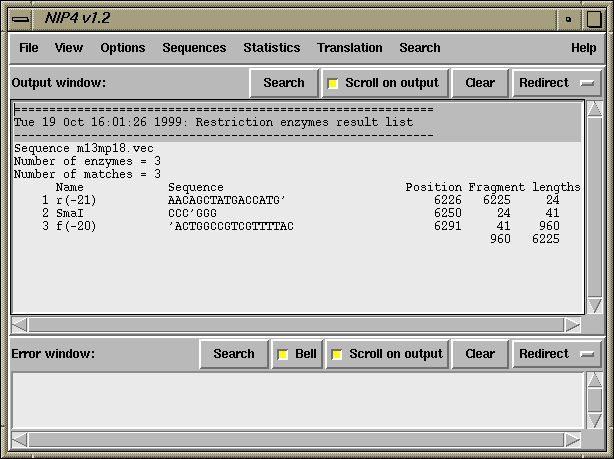

The problem addressed here is how to work out the positions of the cloning and primer sites for vector_clip. The numbers can be worked out from listings of the vector sequences but once you know how, it is far easier to use the restriction enzyme search in spin (see section Introduction) to do it, and that is what we explain here. Some familiarity with spin will help. To use the restriction enzyme search in spin it is necessary to have created a file containing the definitions of the sequences to search for (see section Restriction enzyme files) These files give each enzyme a name and a set of strings (with cut positions marked by "'"). The name is terminated by "/" and each string by "/". An extra "/" terminates all the data for each enzyme. For example "fred/aaa'ttt/gatc'a//" defines enzyme fred to have two recognition sequences aaattt and gatca with cut positions denoted by "'".
For our current purpose we treat the primer sequences as restriction enzymes which each have a single recognition sequence; making sure that the sequence is the sense of the primer that is present in the sequence being searched, and that the "cut positions" define the 3' ends (i.e. the end where the new sequence will start). Again if we use the m13mp18 vector, its SmaI cloning site and the 17mer (-20) forward and 16mer (-21) reverse primers as an example. The reverse primer has the sequence 5'aacagctatgaccatg3' and the forward one is 5'gtaaaacgacggccagt3', and the SmaI site is ccc'ggg where "'" defines the cutsite.
The restriction enzyme file should contain the following:
f(-20)/'actggccgtcgttttac// SmaI/CCC'GGG// r(-21)/aacagctatgaccatg'//
This names the 17mer forward primer as f(-20) and defines its recognition sequence as 'actggccgtcgttttac. Note that this is the complement of the primer (which is what appears in the sequence being searched) and that the "cut position" is defined by the "'" symbol. SmaI is named and defined in the next record by SmaI/CCC'GGG//. The 16mer reverse primer is named r(-21) and defined by r(-21)/aacagctatgaccatg'//, and this time we search for the sequence of the primer and the "cut position" is again at the 3' end.
Having started spin and read in the m13mp18 sequence select "Restriction enzyme map" from the "search" menu. A dialogue will appear requesting "Select input source" and with "6 cutter file" as the default. Select "personal" and give the name of the file for m13mp18 (a file containing the definitions shown above should be found in $STADTABL/m13mp18_primers). The names "f(-20), SmaI and r(-21)" should appear in the selection box in the dialogue. Select all three and the graphical result should appear. Magnify the plot by hitting the "+50%" button and then scroll to the region around 6249 which should look as shown below.
This plot and the functionality of spin are sufficient to work out the numbers
for vector_clip, but there is also a way of getting the values printed in the
text output window (this is described later). To obtain the numbers from the plot
first touch the line showing the SmaI site, its position (6249)
will be written in the
information line at the bottom of the plot. This is the position of the cloning site
and hence is the value for the SC record in the experiment file. Now click on the
line for the SmaI site and the information line will display
"Select another cut"; click
on the line for the forward primer; the distance between the SmaI site and the
forward primer (41) will be displayed in the information line, and in the top
right hand box of the plot. Being to the right of the cloning site, this gives
a positive value for the experiment file SP record. Clicking on the SmaI site,
and then the line for the reverse primer, gives 24 which, being to the left, is
a negative value for the SP record.
To get the numbers displayed in the text output window, select the "Output ordered
on position" item from the "Results" menu of the "Restriction enzyme map" plot.
For the example given here they will appear as shown below.

Finally it is also possible to work out the numbering by using the restriction
enzyme search in the spin "sequence display" which can be selected from the "View"
menu. It will appear as shown below.
![[picture]](primer_pos_plot,6in.png.html)
(Click for full size image)
![[picture]](primer_pos_seq_display,6in.png.html)
(Click for full size image)
Last generated on 25 April 2016.